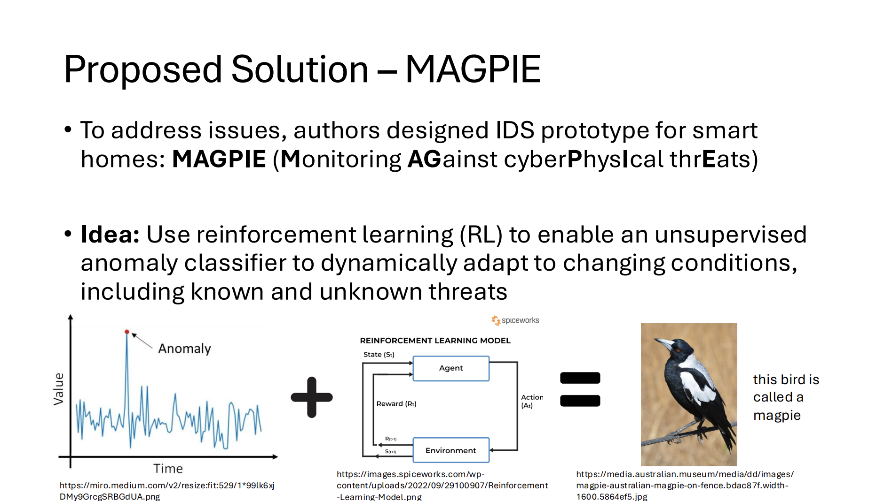
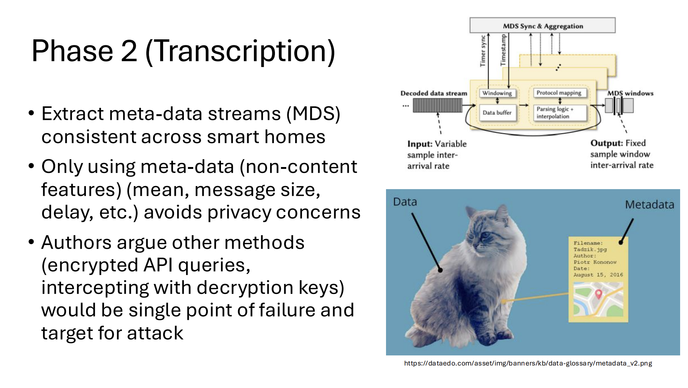
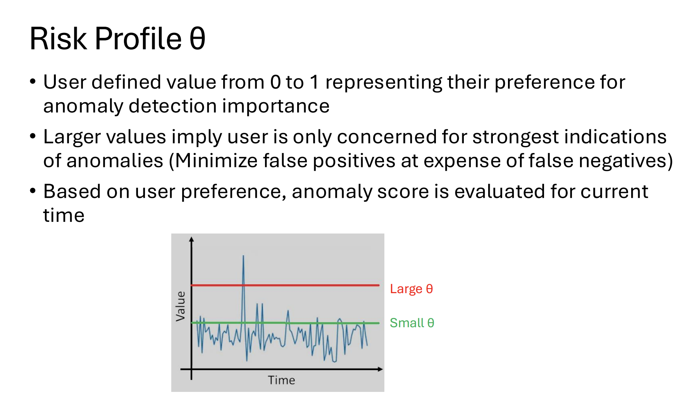
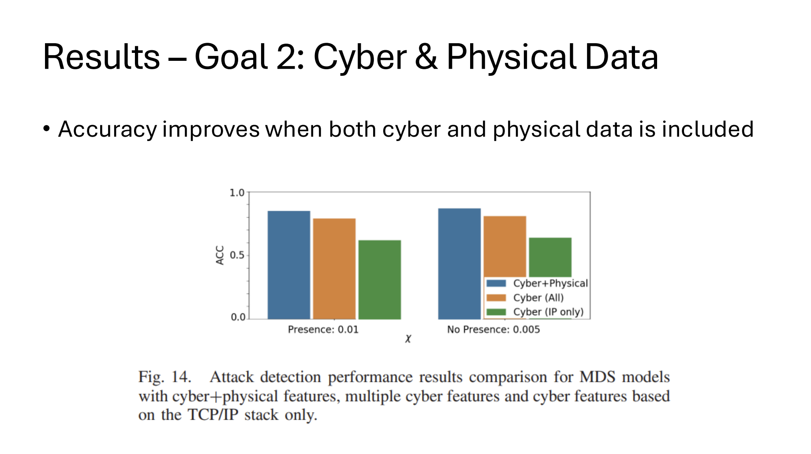

Self-Configurable Cyber-Physical Intrusion Detection for Smart Homes Using Reinforcement Learning
Authors: Ryan Heartfield, George Loukas, Anatolij Bezemskij, and Emmanouil Panaousis
Course: EE/CSC 7700 ML for CPS
Instructor: Dr. Xugui Zhou
Presentation by Group 4: Jared Suprun (Presenter), Carlos Manosalvas, Betty Cepeda
Time of Presentation: 10:30 AM, Monday, October 7th, 2024
Blog post by Group 8: Pacco Tan, Aleksandar Avdalović, Muhammad Waleed Hussain
Link to Paper: https://ieeexplore.ieee.org/abstract/document/9277640
Slide Outlines
Summary of the Paper
The presented paper titled “Self-Configurable Cyber-Physical Intrusion Detection for Smart Homes Using Reinforcement Learning” addresses the challenges of securing IoT-based smart homes from cyber threats in a continuously changing environment. The addition of new Commercial Off-the-Shelf (COTS) devices to the network, each using different network protocols, introduces new vulnerabilities that often remain unpatched. Along with varying user interactions and differing cyber risk attitudes, this creates a highly challenging environment for security. The authors argue that intrusion detection in this rapidly changing environment cannot rely entirely on static models. Therefore, they propose the Monitoring Against Cyber-Physical Threats (MAGPIE) system, which autonomously adjusts the decision function of anomaly classification models using a novel probabilistic cluster-based reward mechanism in non-stationary multi-armed bandit reinforcement learning, improving adaptability to changing conditions. MAGPIE rewards the hyperparameters of its underlying isolation forest unsupervised anomaly classifiers based on the cluster silhouette scores of their output. MAGPIE achieves higher accuracy compared to previous works because it considers both cyber and physical data sources, as well as the factor of human presence. To validate the results, the authors integrated MAGPIE into a real household with three members, where seven different types of attacks—including WiFi deauth, ZigBee jamming, and malware audio injection—were periodically launched to update the model during both normal and abnormal behavior. The result strengthens the original hypothesis by demonstrating improved accuracy when integrating both cyber and physical data, as well as factoring in human presence.
Introduction

This slide introduces the problem arising from the mass adoption of IoT technology, which attracts numerous cyber threats, including unlocking doors and eavesdropping on users through their own devices. These devices are commercial off-the-shelf (COTS), each with varying levels of trustworthiness and vulnerability, along with interdependencies, paving the way for multiple types of attacks.
Challenges

This slide explains why traditional security methods, such as encryption and 2FA, are insufficient, as new vulnerabilities in IoT devices are routinely discovered and exploited, occurring too frequently for typical IDS to effectively counter. It also highlights that the level of security varies among users, with some being more conscious about their security than others. The authors further note that the relatively low cost of COTS devices allows for added security measures without straining the budget. Additionally, it mentions common IoT device connectivity.
Proposed Solution

This slide presents the main concept of the intrusion detection system (IDS) called MAGPIE (Monitoring Against Cyber-Physical Threats), which utilizes reinforcement learning (RL) to enable the underlying isolation forest, an unsupervised anomaly classifier, to dynamically adapt to changing conditions, including both known and (at the time of execution) unknown threats. The system employs a reward function based on the classifier's confidence in its output. This continuous adaptability of the IDS configuration enhances its effectiveness against unknown attacks and in evolving conditions.
MAGPIE Contributions

This slide outlines the three main contributions of MAGPIE:
- MAGPIE's ability to continuously adapt unsupervised smart home threat detection to changing conditions by applying reinforcement learning (RL) to the classifier's hyperparameters, based on a reward function, without prior knowledge of the environment.
- Experimental evaluation using both cyber and physical sources of data. The authors argue that the physical impact of certain security breaches presents an opportunity to gather valuable information about the system's security state.
- Self-configuration based on the automated inference of human presence, where human presence is a key factor in determining what is considered normal behavior.
Related Works

The table highlights the limitations of existing and previous intrusion detection systems (IDS) compared to MAGPIE by comparing cyber sources, physical sources, self-configuration capabilities, and the testbed used. Most existing IDS focused only on network traffic features, such as IP, protocol, and packet size, as sources of cyber data. Previous techniques were typically limited to known attacks and lacked self-configuration methods to adapt to unseen threats. Many smart home IDS overlook the fact that cyberattacks can have observable physical impacts along with significance of human presence that could aid in detection. Additionally, none of the prior methods were tested in a real household environment.
MAGPIE Architecture

MAGPIE’s architecture consists of three stages: collection, transcription, and reasoning. In the collection phase, multiple interfaces capture raw data feeds from both cyber and physical sources and decode them dynamically based on the environment. The transcription phase focuses on extracting meta-data from these raw feeds, selecting consistent meta-data streams (MDS) across different smart home environments. These streams are then aggregated into rolling window buffers, creating an MDS window feed that is stored in the MDS datastore for further analysis. Finally, in the reasoning phase, the system normalizes, and scales all received MDS feeds, preparing the data for further processing. This phase also provides the required feature structures for reinforcement learning (RL) models
Phase 1 (Collection)

The collection phase dynamically activates or deactivates interfaces, capturing and decoding the data coming from cyber and physical feeds. The key objective of this phase is to gather comprehensive data from multiple sources, ensuring MAGPIE can monitor and analyze both the cyber and physical aspects.
Phase 2 (Transcription)

The transcription phase is responsible for extracting meta-data that are consistent across different smart homes. MAGPIE extracts meta-data and aggregates it, creating meta-data streams (MDS) using rolling window-based parser and buffering which also optimizes the performance of extraction. After aggregating, statistical information on extracted meta-data features such as mean, standard-deviation, min and max of sample frequency etc. is analyzed. The presenter also highlighted that using alternative methods, such as authenticated and encrypted device APIs or intercepting data with decryption keys, could create a single point failure, making it easier for attackers to target.
Phase 3 (Reasoning)

The reasoning phase evaluates MDS to determine the best anomaly detection system. It begins by normalizing and scaling MDS feeds for training unsupervised anomaly detection. The system also uses reinforcement learning to continuously adapt the anomaly detection model with reward function based on model’s confidence in its own output, this allows us to evaluate the changes in smart home environment. MAGPIE achieves higher accuracy by considering both cyber and physical data, as well as human presence. The reasoning phase consists of three main components:
- Real-time unsupervised anomaly detection
- Adaptation based on reinforcement learning
- Model selection based on human presence inference
Reasoning - Details (1)

In phases 1 and 2, MDS data is extracted for analysis, and human presence is detected either automatically or manually by the user. Based on this detection, the system selects an appropriate anomaly classifier for real-time detection. The system then evaluates the risk profile θ and computes the anomaly score \(a_t\) for the current time window (t).
Risk Profile θ

Here the θ represents the risk profile which depends on the users of the household. For example, a very low value, such as θ = 0.3, would mean that the household wants to be warned even for low indications of anomalies. Naturally, it will also increase the false positives. The author also states that use of model-specific θ would increase flexibility but will result in increased configuration complexity.
Anomaly Score

The metric used to evaluate anomalies detected across a time window t is anomaly ratio, which is given as ( \( p_{k,t} = \frac{A_t}{A_t + N_t} \) ).
By extending this approach across all feeds, we aggregate anomaly score as ( \( a_t = \left( \frac{\sum_{k=1}^{K} p_{k,t}^q}{\sum_{k=1}^{K} p_{k,t}} \right)^{\frac{1}{q-1}} \) )
The author states that transformation is necessary to account for highly variable behavior. Additionally, the aggregate anomaly score addresses the skewness that may occur in individual anomaly scores.
Reasoning - Details (2)

Currently, the anomaly detection system (ADS) is based on user preferences, but it cannot be expected to work perfectly for all time windows, as the risk threshold θ may change over time when devices are added, removed, or reconfigured. To address this, a reinforcement learning (RL) algorithm is implemented to modify the anomaly classifier’s hyperparameter χ, allowing the system to adapt to the new θ preferences. This continuous adaptation ensures that the ADS remains effective as the smart home environment evolves, enabling the system to handle dynamic changes in the device landscape and user-defined risk tolerance.
Reinforcement Learning

This slide explains the concept of reinforcement learning, a machine learning technique that trains software to make decisions to achieve the optimal results. The key concept of reinforcement learning include:
- Agent - the RL algorithm that learns and make decisions.
- Environment - the problem space where the agent operates. This environment has certain rules and possible actions that can be taken by the agent to achieve the desired result.
- Action - A move or step taken by the agent in a given environment state which generates a reward, allowing it to evaluate the correctness of action.
- Reward - the feedback received after an action is taken by the agent, the reward can be positive, negative or neutral.
Multi-Armed Bandit (MAB)

This slide explains a classic problem in probability theory and decision-making. As the name suggests, the problem is that a gambler is facing multiple slot machines where each machine’s reward is drawn from an unknown probability distribution. The gambler wants to maximize the reward. To maximize reward, we must balance the trade-off between exploration (choosing different arms to gather information about reward distribution of each slot machine) and exploitation (choosing the arm that has provided the highest rewards based on current information).
Reasoning - Details (3)

In this context, "arms" refer to the choices of the anomaly classifier's contamination hyperparameter χ. MDS (Meta-Data Streams) snapshots are fed into the multi-armed bandit (MAB) model, which continuously selects different χ values and evaluates their rewards. After training on all snapshots, the χ value that yields the maximum reward is selected for use in the real-time anomaly classifier, ensuring the system is optimized for accurate detection in changing conditions.
Experiment

This slide presents the experiment conducted to evaluate the prototype by integrating MAGPIE within a smart home of a real household with three members. The layout presented in the slides show multiple COTs connected via Wi-Fi LAN along with a ZigBee gateway for ZigBee devices, any adversary within wireless range can execute ZigBee and Wi-Fi attacks. The behavior of users and their interactions were allowed to occur naturally with some requested actions to activate all the devices and automation rules. Training data collection spanned for 1-month period. The table shows the summary statistics related to the datasets collected during the time. Furthermore, they ran seven different kinds of attacks routinely to update the model, these attacks comprise of Wi-Fi deauth, Wi-Fi Evil Twin, ZigBee jamming, ZigBee node amplification, Malware audio injection, Security camera compromise and Workflow automation compromise.
Results - Goal 1: Adaptability Using RL

The result of the prototype is measured in terms of:
- Attack detection accuracy with reinforcement learning adaptation vs random configuration, also the effect on performance with and without physical data source.
- Accurate detection of presence and its effect on threat detection performance for dynamic ADS selection
The experimental results for selecting χ show that exponential weight algorithm (EXP3) achieved lowest regret and highest average cumulative reward compared to UCB strategy and random arm selection strategy. Based on this result, EXP3 is the optimal algorithm for adjusting anomaly detection classifier.
Results - Goal 2: Cyber & Physical Data

The bar graph illustrates the detection accuracy for the presence and no-presence models across different MDS cyber and cyber-physical feature models. We achieve higher accuracy when both cyber and physical smart home data sources are used compared to cyber features only. However, even without physical features, extending the collection of cyber features beyond traditional monitoring of TCP/IP traffic significantly improves the detection accuracy across a wide range of attack vectors in the smart home.
Results - Goal 3: Human Presence

The given figures show a noticeable advantage using presence inference, achieving high classification accuracy during both attack and non-attack scenarios. The interesting thing is that θ = 0.3 yielded the highest overall accuracy (93%) whereas θ = 0.5 has a negative effect on detection accuracy for attacks A6 & A7.
Conclusion

In conclusion, the prototype performed well against various attack vectors at different network layers, showing that physical data sources can significantly enhance detection, especially for attacks invisible to systems that monitor only TCP/IP traffic. We effectively used the same data for both anomaly detection and reliably identifying user presence, which improved model accuracy. Finally, the presenter highlighted some future work focusing on incorporating more parameters into RL along with MAGPIE’s applicability as proactive defense mechanisms against adversarial machine learning attacks in cyber-physical systems.
Limitations

This slide states the limitation of MAGPIE, the presenter highlighted the noticeable accuracy drop during audio injection attack when there is no presence. This is because random forest determined higher audio values are associated with presence and thus classifying audio injection attack as user presence. Additionally, the initial training phase requires users to manually schedule their presence and absence periods.
Discussions
Discussion 1: What other forms of CPS than smart homes could potentially benefit from a system like MAGPIE?
The presenter proposed that some other CPS that could benefit from MAGPIE are smart grids, industrial automation systems, healthcare devices, and intelligent transportation systems.
Discussion 2: Can you think of any additional factors beyond just human presence that could potentially help improve the system?
Group 8 said monitoring the resources like electricity could help determining an anomaly
The presenter mentioned factors like user behavior patterns, device vulnerability levels, environmental context, and network traffic patterns could enhance MAGPIE's effectiveness.
Discussion 3: Which attacks do you think are most common in smart homes? Which are the hardest to prevent and why?
Group 6 said if someone alters the camera feed, that is one of the hole in the system
The presenter mentioned some common attacks in smart homes include unauthorized access, denial of service (DoS), and eavesdropping, with eavesdropping being one of the hardest to prevent.
Questions
Q1: Group 8 asked: What is χ and the reward function?
χ is a hyperparameter for each classifier, It is a decision threshold controller, Reward is based on accuracy of output.
Q2: Group 6 asked: When does the RL train?
it happens periodically over time, the 'end of window' is the timestamp when the RL occurs.
{kind=link}
{kind=link}
{kind=link}
{kind=link}